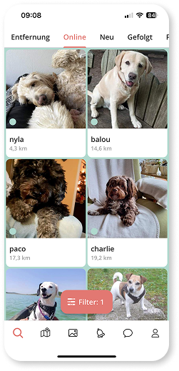
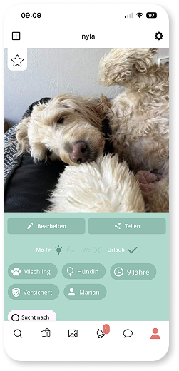
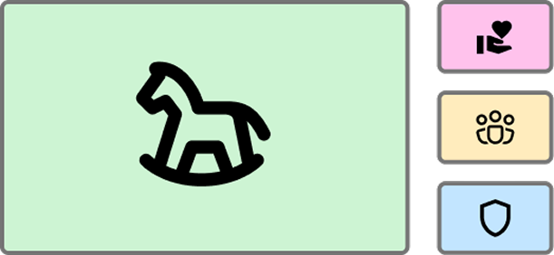
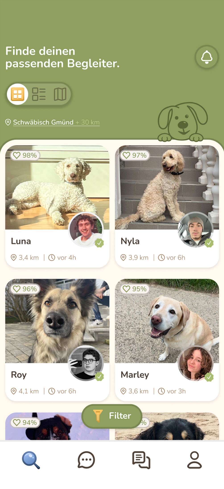
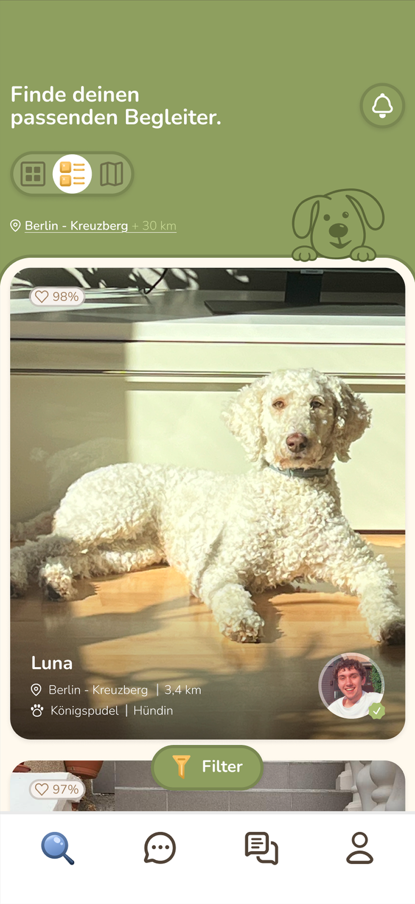
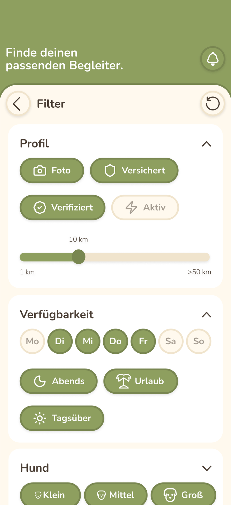
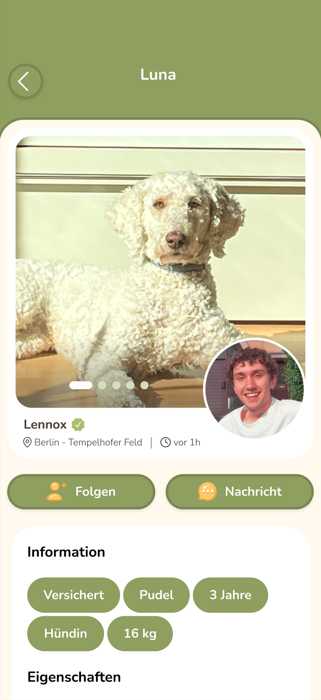
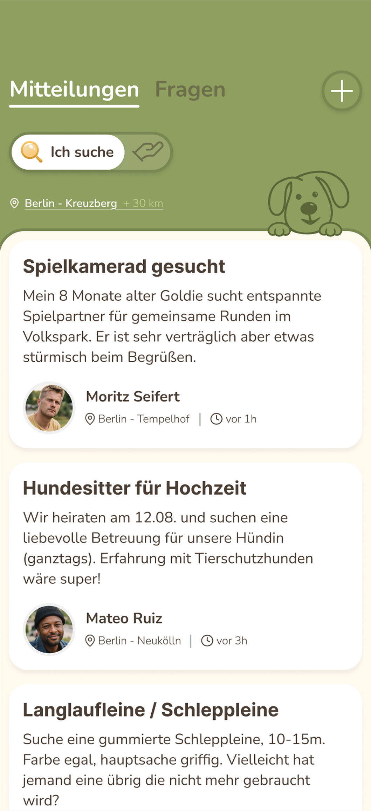

Hundelieb
Hundelieb vernetzt Hundebesitzer:innen mit Menschen, die Zeit mit Hunden verbringen möchten. In der bestehenden Version führten unklare Strukturen, informationsarme Profile und eine überladene Navigation zu Orientierungsproblemen und einem mangelnden Vertrauen in die Plattform. Ziel des Redesigns war es, diese Schwächen durch eine klare Informationsarchitektur, reduzierte Interfaces und konsistente Design Principles zu beheben.

UX Research, Information Architecture, Interface Design
5 Wochen (Redesign)
Figma, Interviews, Wireframing
Herausforderung
Zu Beginn haben wir die bestehende App analysiert und die zentralen Schwachstellen identifiziert. Dabei wurde deutlich, dass unklare Navigation, wenig aussagekräftige Profile, schwache Filterlogik und geringe Lesbarkeit die Nutzung erschweren. Unser Ziel war es, die App in eine vertrauenswürdigere, klarere und stärker community-orientierte Erfahrung zu überführen.


Erkenntnisse
Im nächsten Schritt haben wir durch User Interviews, Personas und die Value Proposition die Bedürfnisse der Nutzer:innen untersucht. Besonders wichtig waren dabei Vertrauen, Transparenz und der Wunsch nach echter sozialer Interaktion. Die Erkenntnis war, dass Nutzer:innen nicht nur Informationen über den Hund, sondern auch über die Person dahinter brauchen, um sich sicher zu fühlen.
Designansatz
Auf Basis dieser Erkenntnisse haben wir Lösungsansätze entwickelt und in eine klarere Produktstruktur übersetzt. Dazu gehörten neue Funktionsideen, Wireframes, eine überarbeitete Informationsarchitektur, Screenflows sowie definierte Designprinzipien. So konnten wir Schritt für Schritt eine App gestalten, die Orientierung gibt, Matching verbessert und Community stärker in den Mittelpunkt stellt.

Ergebnis
Im finalen Design haben wir die wichtigsten Bereiche der App neu gedacht und visuell ausgearbeitet. Dazu gehören eine verbesserte Suche, sinnvollere Filter, transparentere Profile und ein Forum für Austausch und Unterstützung. Das Ergebnis ist ein konsistenteres, nutzerzentrierteres Redesign, das Vertrauen schafft und die Community-Idee der App stärker hervorhebt.




